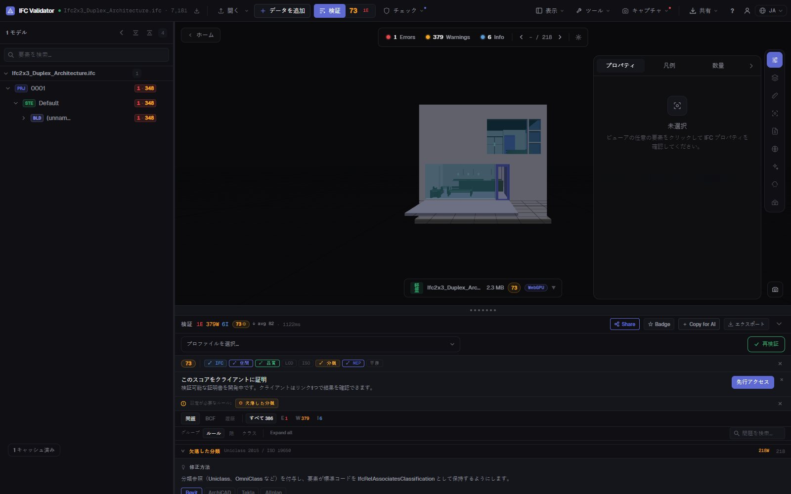
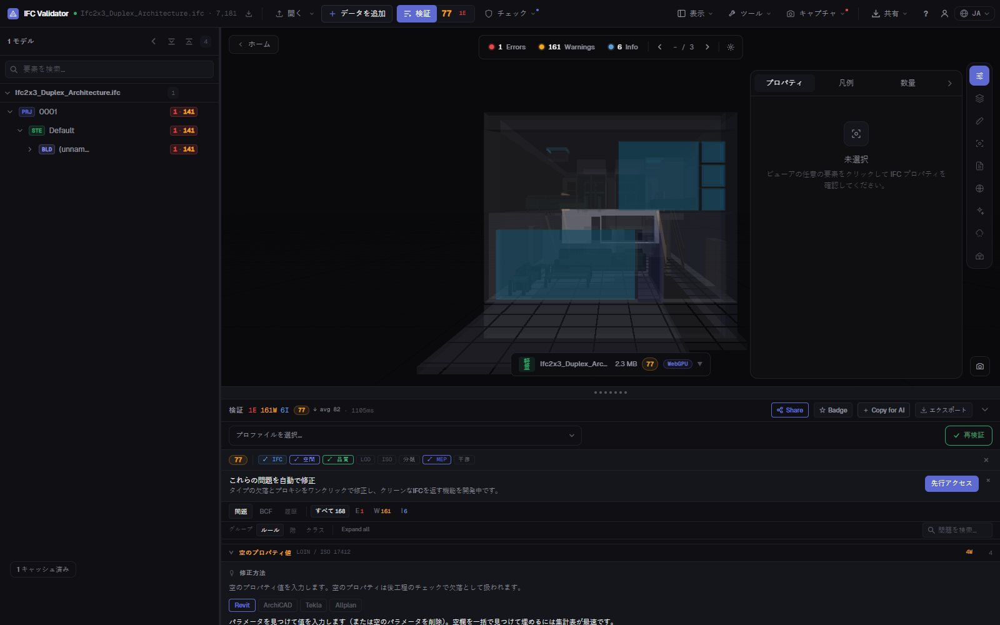

IFC 分類チェック
Uniclass、OmniClass、Pset
IFC 内で分類参照のない要素をすべて検出します（任意の体系、または BIM 実行計画が求める体系のみ）。あわせて欠落したプロパティセット、空の値、命名規則に反する名前も見つけ、各結果を一覧・集計し 3D で表示します。
分類をチェック — 無料 →アカウント不要 · アップロードなし · ブラウザで動作 · 無料

できること
納品前の分類・データチェック
BIM コーディネーターが CDE に受け入れる前に行うチェック。
分類の欠落
IfcClassificationReference のないすべての物理要素。任意の体系、または指定した体系のみ（Uniclass 2015、OmniClass、CCS、NL-SfB など）。
IDS による分類チェック
buildingSMART の IDS ファイルを読み込み、要素タイプごとに体系とコードを要求。IDS の分類ファセットに完全対応。
プロパティセット検証
必須プロパティセットの欠落と空の値を要素クラスごとに検出。
命名規則
BEP のパターンで名前をチェック。空の名前や重複名も検出（一括変更可能）。
3D で表示
いずれかのチェックに失敗した要素をモデル内で分離表示し、他は半透明に。各要素へジャンプできます。
書き出し
結果を BCF で作成者に送るか、CSV、JSON レポート、印刷可能な納品レポートとしてダウンロード。
スクリーンショット

FAQ
よくある質問
IFC モデルの分類をチェックするには？
IFC Viewer Online で IFC を開き、分類ルールを有効にして検証します（ISO 19650 とコーディネーションのプロファイルに含まれます）。分類参照のない要素を一覧表示し 3D で示します。要素タイプごとに体系とコードを要求するには IDS ファイルを読み込みます。
対応する分類体系は？
IfcClassification / IfcClassificationReference として保存されたすべての体系：Uniclass 2015、OmniClass、CCS、NL-SfB、CoClass、MasterFormat、独自体系。任意の体系、または指定した体系のみを許可できます。
プロパティセットも検証できますか？
はい。必須 Pset の欠落と空の値をルールで検出し、IDS ファイルで特定のプロパティ、データ型、値を要求できます。
モデルはアップロードされますか？
いいえ。チェックはブラウザ内で WebAssembly により実行され、IFC はお使いのコンピュータから出ません。あらゆる用途で無料、アカウント不要です。
結果をモデル作成者と共有できますか？
はい。作成者のソフト向けに BCF 2.1、または CSV、JSON、印刷可能な納品レポートとして書き出せます。